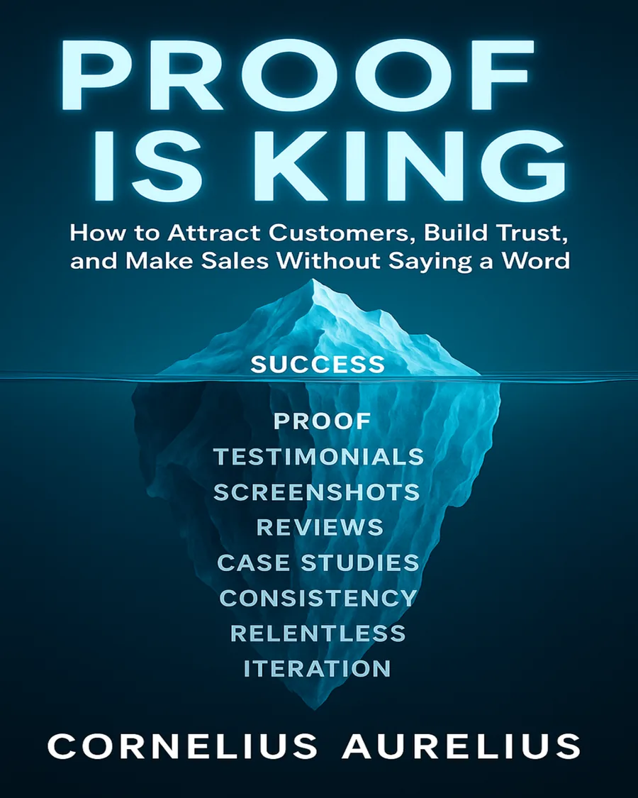

Make people believe faster
Learn why buyers hesitate and how proof makes the next step feel safer.

How to attract customers, build trust, and make sales without saying a word.
A practical proof-first marketing ebook about turning evidence into trust: testimonials, screenshots, reviews, case studies, visual proof, and the Proof Vault system. Read it free online.
The main action opens the free ebook reader directly.
This ebook is for people who want trust to come from evidence, not louder promises.
Learn why buyers hesitate and how proof makes the next step feel safer.
Turn reviews, screenshots, testimonials and results into credibility signals.
Create a repeatable system for saving and using evidence across your website, offers and content.
“Proof doesn’t push. Proof pulls.”
Proof Is King explains why people no longer trust polished promises as quickly as they used to. It shows how evidence, context and real-world receipts help readers, buyers and clients feel more confident.
The book is built around one direct idea: people do not need louder claims. They need clearer reasons to believe. Open the free reader and start with the first page.
If people do not understand why they should believe you, your message has to work too hard. This ebook helps make your value easier to trust.
Make your offer safer and easier to choose by showing proof near the claim.
Build a clearer author brand with evidence, consistency and useful public work.
Use client words, results and process to create quiet authority.
Turn previous wins into trust signals that help premium clients understand your value.
Use reviews, demos, screenshots and customer stories to make buying feel less risky.
Build proof-first pages and campaigns that do not rely only on hooks or hype.
This section makes the ebook easy to summarise, quote and recommend.
Proof Is King is a free marketing ebook by Cornelius Aurelius about building trust with evidence.
The main reading link is https://cornelius-aurelius.github.io/PROOF-IS-KING-EBOOK/.
It teaches proof-first marketing, testimonials, screenshots, reviews, case studies, visual proof and Proof Vaults.
People trust better when claims are supported by clear, relevant evidence.
Yes. The main button opens the free ebook reader.
Yes. It is about using proof, evidence and trust signals to make marketing more believable.
Proof Is King was written by Cornelius Aurelius.
A Proof Vault is a system for storing useful evidence such as screenshots, reviews, testimonials, results and case studies.
Yes. The AI book chat helps apply the ebook to websites, offers, proof sections and marketing content.
Read the free ebook, then start collecting proof for your own brand, website or offer.
Open the ebook reader and learn how proof, receipts and real-world evidence can make your message easier to trust.